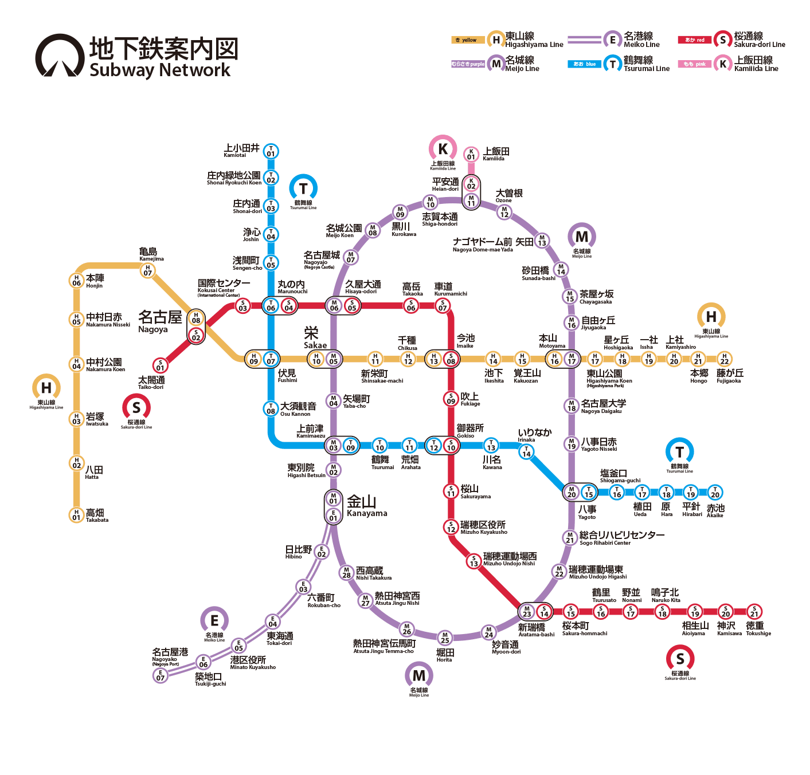

よく使う区間
この先の電車
–分
所要（目安）
–駅
駅数
–円
運賃
発車の目安
時刻表
名鉄本線は「路線別時刻表（名古屋本線）」2026年3月14日改正、地下鉄は名古屋市交通局の駅別時刻表より。名鉄は豊橋〜木曽川堤の全55駅・上下とも収録。数字の右は行先、色は種別です。神宮前から常滑線・河和線へ入る列車（中部国際空港・河和行など）も名古屋本線を走る区間は載せています。
時刻表タブの「☆登録」と同じ一覧です。行をタップすると停車駅が見られます（名鉄のみ）。
現在地と経路
実際の線路の形を描いたベクター図です。地図タイルを読み込まないので通信ゼロで動きますが、道路や建物は出ません。地下ではGPSが届かず現在地が止まります。
地下鉄案内図

名古屋市交通局の地下鉄案内図です。ドラッグ／ピンチで拡大・移動できます。
路線別の駅一覧
交通系ICカード
manaca・Suica・PASMO・ICOCA などの交通系ICカードを、端末の背面にタッチしてください。読み取った内容はこの画面に表示するだけで、保存も送信もしません。
残高
利用履歴（新しい順・最大20件）
定期券
表示
乗車中に通知を出す
降車アラーム
テーマ
音声駅案内
音声駅案内
乗車を記録すると、次の駅・乗換・目的地を音声でお知らせします。
読み上げる内容
読み上げ速度
音量
イヤホン接続時のみ
声と話し方
案内文
駅名のイントネーション（全体の既定）
駅ごとに変えたいときは、下の「駅名の読みとイントネーション」から駅を選んでください。
駅名を変えるときの読ませ方
駅名の読みとイントネーション
ふりがなで読む
駅を選ぶと、読み（何と読むか）とイントネーション（どう読むか）を別々に設定できます。読みを変えてもイントネーションの設定は消えません。
駅ごとに設定した駅
音声の診断
この端末の読み上げエンジンが、どこまで細かい指定に対応しているかを調べます（診断中は音は出ません・10秒ほど）。
「とうきょう」と聞こえたら、このエンジンは SSML の読み替え（sub）に対応しています。「きょうと」なら非対応、英語のタグが読まれたら SSML 自体に非対応です。
前回の異常終了の記録
アプリとデータの更新
このアプリについて・データの出典
- 駅名をタップ → 目的駅／行の右の「現」→ 現在駅。地図・路線図の駅をタップしても目的駅になります。
- 時刻表（名鉄）：名鉄「路線別時刻表（名古屋本線）」2026年3月14日改正のPDFから起こした、豊橋〜木曽川堤 全55駅・上下・平日/土休日の全列車（約1,650本）です。種別・行先・各駅の発車時刻を収録しています。
- 時刻表（地下鉄）：名古屋市交通局の駅別時刻表（公式）から、東山線・名城線・名港線・鶴舞線・桜通線・上飯田線の全87駅・上下・平日/土休日の発車時刻（延べ約63,000件）を収録しています。年末年始・終夜のダイヤは含みません。
- 発車の目安は時刻表ではありません。公表されている運転間隔と毎時本数から「およそ何分間隔か」を出しています。地下鉄の間隔は「まるはち交通」掲載の基本ダイヤ、名鉄の毎時本数はWikipedia「名鉄名古屋本線」運行形態（2023年3月18日改正）に基づき、普通列車の本数・早朝夜間・名鉄の朝夕増発は推定（△印）です。祝日は判定していません。
- 種別バッジは名古屋本線のみ。快特＝快速特急、うすい表示は一部列車のみ停車。地下鉄は全列車が各駅停車。
- 名城線は環状線。目的駅までの向きは近いほうを自動で選びます。
- 定期券を登録すると区間内は0円、はみ出した分だけ運賃計算します（実際の精算と1区間ずれることがあります）。
- 所要時間・到着予定は距離と停車数からの概算で、時刻表とはずれます。運賃は名鉄2024年3月16日改定・地下鉄現行の大人普通運賃（名鉄と地下鉄をまたぐ場合は単純合算、乗継割引なし）。
- 駅座標・駅順・線形は station_database（ekidata / OpenStreetMap 由来）、営業キロは実線形への投影値を全線キロで補正した概算です。
- 経路検索の対象は名鉄名古屋本線（愛知県内）と名古屋市営地下鉄6路線です。
- ICカードの駅名は、交通系ICカードの駅コード表（IC SFCard Fan 氏の調査をもとにした soltia48/suica-viewer の station_codes.csv、MIT License）で引いています。有志による非公式のデータなので、載っていない駅や誤りがあることがあります。